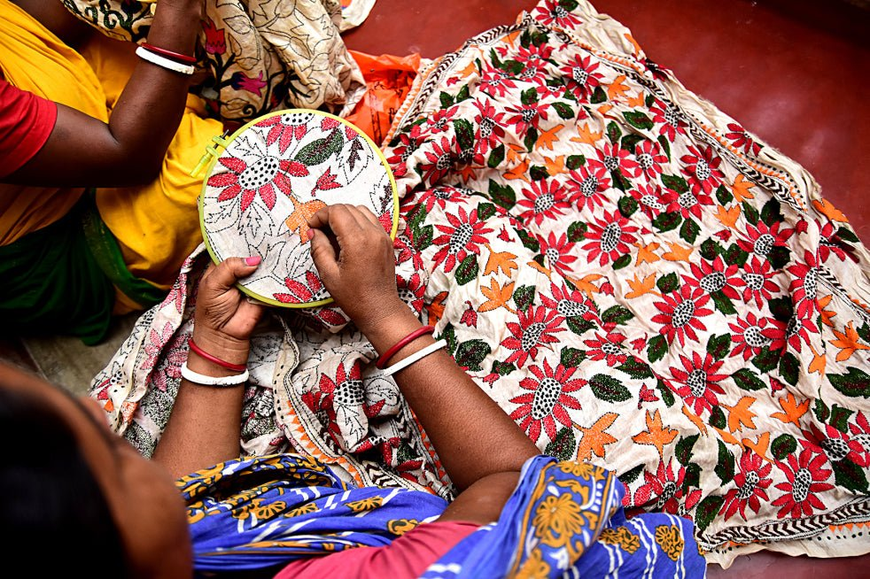

📖 Origin & Heritage
Kantha Embroidery is a traditional hand embroidery technique from West Bengal and Bangladesh. It dates back more than a thousand years, originating as a way for rural women to recycle old sarees and dhotis into quilts and shawls. The word "Kantha" means "patched cloth." Today, Kantha is admired globally for its simplicity and storytelling motifs.
💡 Did You Know?
🌟 Kantha uses a simple running stitch, yet creates intricate patterns and stories.
👩🎨 Women traditionally stitched Kantha at home, passing the craft through generations.
🎨 Motifs often depict folk tales, animals, flowers, and scenes from daily life.
🌏 Today, Kantha embroidery is applied not only on quilts but also sarees, scarves, and home décor.
🌺 Unique Features of Kantha
Running Stitch – The essence of Kantha, making designs look like delicate hand-drawings.
Storytelling – Each piece narrates myths, epics, or village life scenes.
Recycling Spirit – Born as an eco-friendly craft from old sarees and cloth layers.
Global Fame – Now showcased in international fashion and exhibitions.
🎯 Quick Quiz:
The main stitch used in Kantha embroidery is?